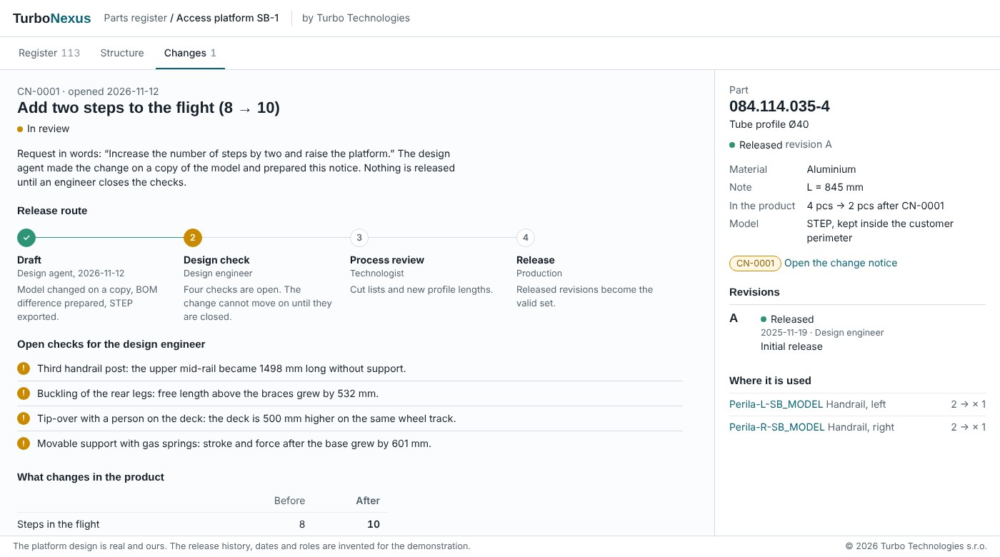
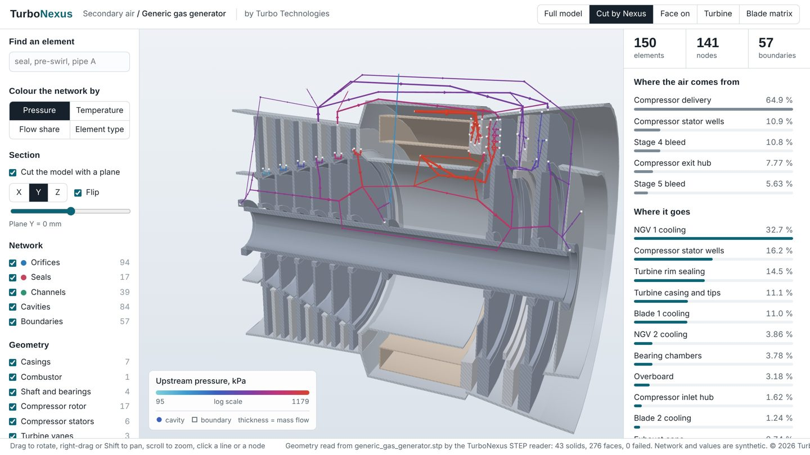

TurboNexus: an AI engineering agent for CAD
A design change described in words, carried out on the model, with the old and the new version and the bill-of-materials difference in front of the engineer who approves it.
- No CAD licence neededReads STEP assemblies and shows them in an offline 3D viewer.
- One coreWorks on top of commercial and open-source CAD systems.
- Old, new, BOMApplies the change, keeps both versions side by side and reports what changed.
- Inside the perimeterDesign data does not leave the customer. Drafts only: approval stays with the engineer.
The video shows a prototype run on a real assembly: an access platform taken from 8 to 10 steps (deck 2254 → 2754 mm, base 2860 → 3462 mm, eight BOM positions changed). Strength and stability checks of the variant are not part of the example.
Preliminary beam model with rigid joints; bolts, welds and handrails are not in it. It is a calculation note for the responsible engineer, not a strength approval.
A parts register that the design agent keeps in step with the model: structure, revisions, and a change notice that waits for an engineer to close the checks before anything is released.

Open the live demonstration: search the 113-item register, expand the structure, read the change notice “8 to 10 steps”.
The access platform is our own design. The release history, dates and roles are invented for the demonstration.
Please do not hesitate to contact us for details: turbotechnologies@email.cz
Secondary flows in gas turbines and turbomachinery
A 1D network method for cooling flows, seal leakage, cavity pressures and rotor axial thrust in gas turbines and other turbomachines. Validated on gas turbine engine networks and consistent with tools used in EASA Part 21 and CS-E work. Built on the classics: Bernoulli, Euler, Kirchhoff, Borda–Carnot.
- StructuredCavities, holes, labyrinths and ducts as one network, every input traceable.
- ValidatedChecked on engine networks of 200+ branches; consistent with Part 21 / CS-E tools.
- Thrust includedRotor axial forces straight from the solved cavity pressures.

A network of this kind laid on a section cut by the TurboNexus viewer: open the live demonstration and rotate it, move the section plane, click any line or cavity. Or read the four-page overview (PDF).
Synthetic 150-element network on an invented geometry, not an engine. Values are illustrative: a simplified solver, no rotation, no heat transfer.
Open source (Apache-2.0): github.com/Turbo-Technologies-s-r-o/sasnet.
Please do not hesitate to contact us for details: turbotechnologies@email.cz
More is coming
Further tools for gas turbines and turbomachinery are in development. Stay tuned.
Contact
Turbo Technologies s.r.o., Prague, Czech Republic · since 2011
Email: turbotechnologies@email.cz